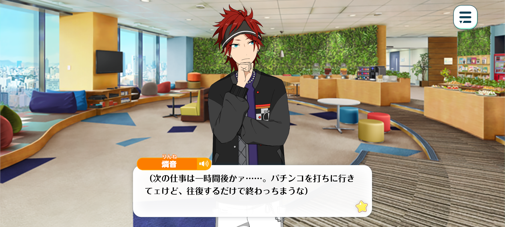
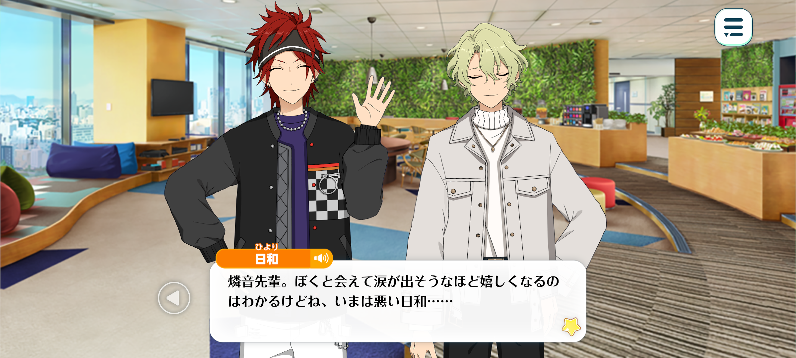
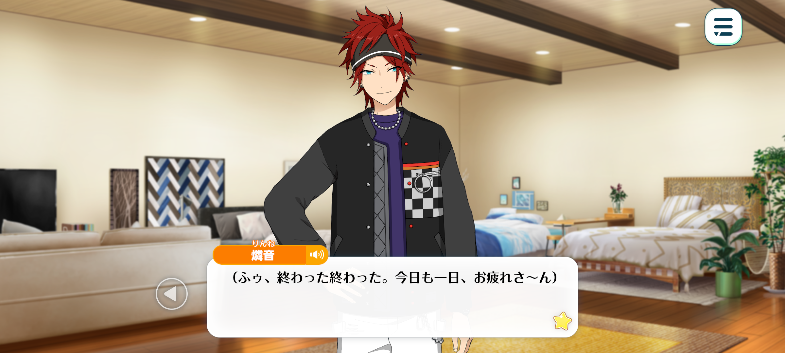
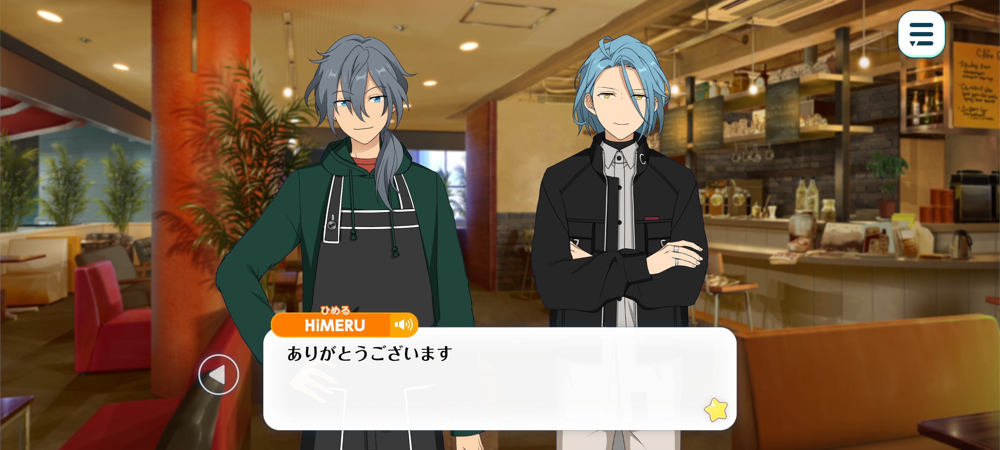
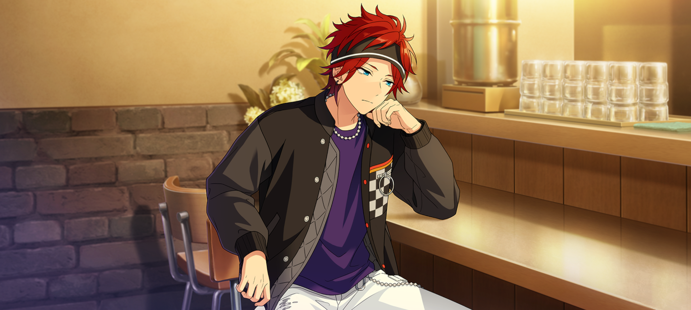
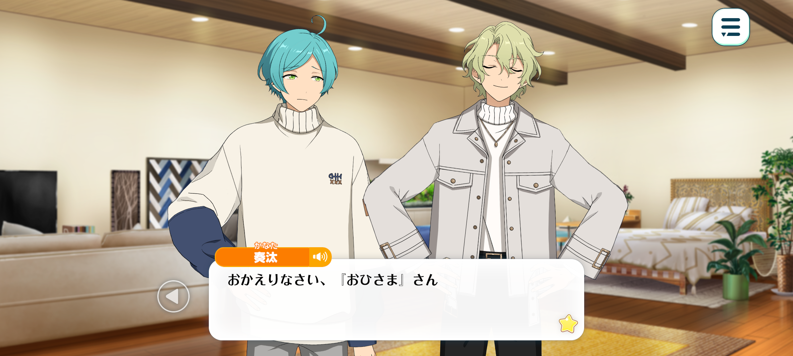
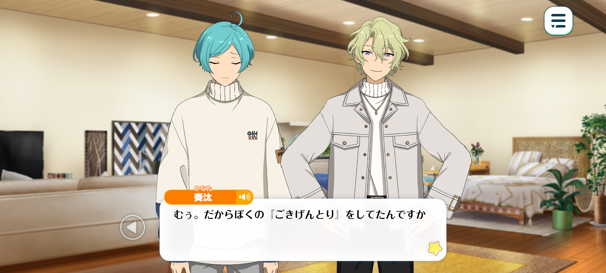
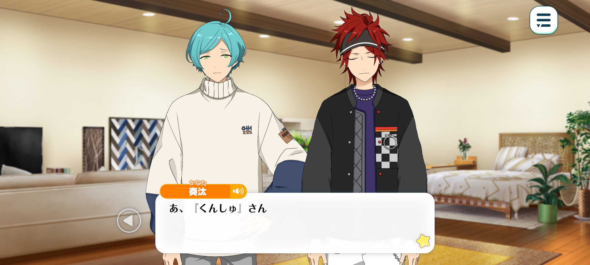

Dear God ☆


Season: Autumn

Rinne: (The next job's in an hour... I could go play pachinko, but there's not really enough time to get a proper game in...)
(I could head to Cafe Cinnamon, but there's no point if Niki ain't there.)
(How'm I gonna kill time around here, then...? There's gotta be somethin' I can do to stave off the boredom...)
(...Ah)
Oi, Hiyori-chan! ♪ Fancy runnin' into you here! What a pleasant surprise!
I got no proof or anythin', but just seein' you feels like a good omen. Maybe you'll bring me a bit of good luck, like ii hiyori or somethin'...♪

Hiyori: Rinne-senpai. I know you're so overjoyed to see me that you've shed a few tears, but I'm afraid today is turning out to be a rather warui hiyori...
Rinne: Huh? Somethin' happen? You alright? Caught a cold or somethin'?
Hiyori: You see, I came here to get myself a little snack, but the quiche I wanted is sold out.
To think I was even the one who told them to add quiche to the menu in the first place! It’s simply disgraceful that I can’t have any right now.
Rinne: Whoa, whoa! Your favourite food's tissue paper? What, you eat paper like a goat or somethin'? ♪[1]
C'mon, give us a little "baaa", Hiyori-chan...☆
Hiyori: I will not be doing that. I am not a goat!
I'm really not in the mood to be teased, you know? Why are you trying to get a rise out of me?
Rinne: What's the harm in havin' a little chat with someone I know when I've got time to kill?
We share a room, don't we? So c'mon, let's get along a little better, yeah? Gyahaha! ☆
Hiyori: We share a room, you say...? In that case, why not go and speak with Kanata-kun instead? He's quite lucky himself, although naturally, nowhere near as lucky as I am.
Rinne: Whaddya mean?
Hiyori: It's only a rumour, but apparently, back when he attended Yumenosaki, he had the ability to grant people's wishes. That's why people worshipped him.
Rinne: People's wishes? Gyahaha! Yeah, right. That's gotta be a load of baloney. What, is he some kinda god or somethin'?
Hiyori: Fufu. Believe whatever you like, Rinne-senpai. That's entirely up to you.
Time: Six hours later

Rinne: (Fuah, finally done! Another hard day's work, well done me~)
(Gotta dump my stuff here, then I'm off. My beloved gambling's waitin' for me! ♪)
(Alrighty, let's hit the road! I gotta check out those new machines they just brought in.)
(...Huh?)
Kanata: Zzz…zzzzzz…
Rinne: (When'd ya get back, Kanacchi? Didn't even notice.)
(Sound asleep, huh? Wonder what he's dreamin' about...)
…
(So, he supposedly granted people's wishes, huh...?)
(I mean, it's probably just some made-up rumour, but... couldn't hurt to give it a shot, right...?)
(Whispering) I’m prayin’ I win big
(Alrighty then! Let's see if this thing really works! ♪)
Time: A few days later

Niki: Sorry for the hold up~. Here are today's two specials!
HiMERU: Thank you very much
Kohaku: ...Hey, Niki-han. There's somethin' I've been meaning to ask ya.
HiMERU: Oukawa.
Kohaku: Ain't ya worried, HiMERU-han? Niki-han oughta know about it too. We shouldn’t keep it t’ourselves.
Uhh, over there... That's Rinne-han, ain't it? Sitting by the counter?

Rinne: …
…Sigh
Kohaku: He's lookin' pretty deep in thought. Did somethin' happen? Think he ate somethin' funny?
Niki: Ehh?! Don't tell me he got food poisoning from something here!
It is weird that he hasn't come over to bother us, though. Now that you mention it, he really is acting differently than usual.
HiMERU: Well, it seems even Shiina is unaware of what's going on.
Kohaku: HiMERU-han? Where're ya goin'?
HiMERU: HiMERU is going to ask him directly. There's no point wasting time discussing the matter when we know nothing about it.
Amagi, is something the matter?
Rinne: ...Ngh, Merumeru. Do ya believe in God?
HiMERU: …Pardon?
Kohaku: Damn, Rinne-han's broken.
Niki: Uwaa, this is bad! Who can fix him? Little brother-san?!
Rinne: I ain’t broken. I'm perfectly fine.
I dunno how or why, but if ya get down on your hands and knees in the same room as Kanacchi, then go play pachinko, you'll always win big!
I thought it was a load of bullshit, but... I think he might actually be some kinda gambling god…
I'm gonna have to cherish that power of his! ♪ Gyahahaha!
Time: A few more days later

Hiyori: I'm home! If anyone's here, I'd appreciate a suitably lavish welcome!
Kanata: welcome back, “ohisama”-san.
Hiyori: Kanata-kun, is something the matter? I've come home, yet you don't seem particularly happy to see me!
Kanata: my mood is “average”, but i am “confused”.
recently, "chief"-san has been making an awful lot of fuss over me. or rather, he's been "pampering" me.
Hiyori: Pampering?
Kanata: yes. he gave me an inflatable "pool", and keeps taking me to "seafood" restaurants.
i don't understand his "intentions". it is troubling.
Hiyori: Ahh. I think I have a pretty good idea why. Allow me to enlighten you.
Time: After a few minutes

Hiyori: —And that's the long and short of it! It seems he believes that the more he pampers you, the better his luck at gambling will be.
I'm fairly certain he genuinely thinks you're some sort of gambling god now!
Kanata: hm. so that is why he is acting like a “suck-up”.
this feeling of being used, i do not like it

Rinne: I’m back~...
Kanata: ah, “chief”-san
we must talk. i am not a “gambling god”, yes?
Rinne: Ah... haha. So the cat's outta the bag, huh?
Woulda been nice to know that sooner, though. I just lost a fuckton of money.
Haaah... What a cruel world we live in. It was too good to be true...
Hiyori: You're forbidden from sighing in my presence! If Kanata-kun won't do, then why not worship me instead?!
I am the one here who hails from Eden, bearing the name of paradise ruled by an omnipotent and omniscient god! Treat me well, and I'm sure you'll be blessed!
Rinne: No way~. Ya tryin' to force your religion on me~? What should Rinne-kun do~? ♪
Hiyori: Just give it a try! I'll even have a bronze statue of myself made, so you can worship it every day.
Rinne: Hehe~, Hiyori-sama~☆
Hiyori: Hmm, I don’t like your tone! Say it with more respect!
Rinne: Damn. This god’s got a lotta demands~
- rinne mishears, purposefully or not, quiche (kisshu) as tissue (tisshu)